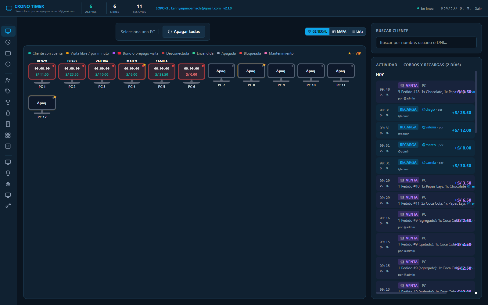
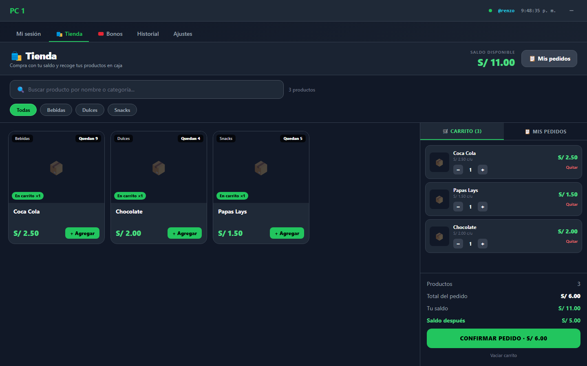
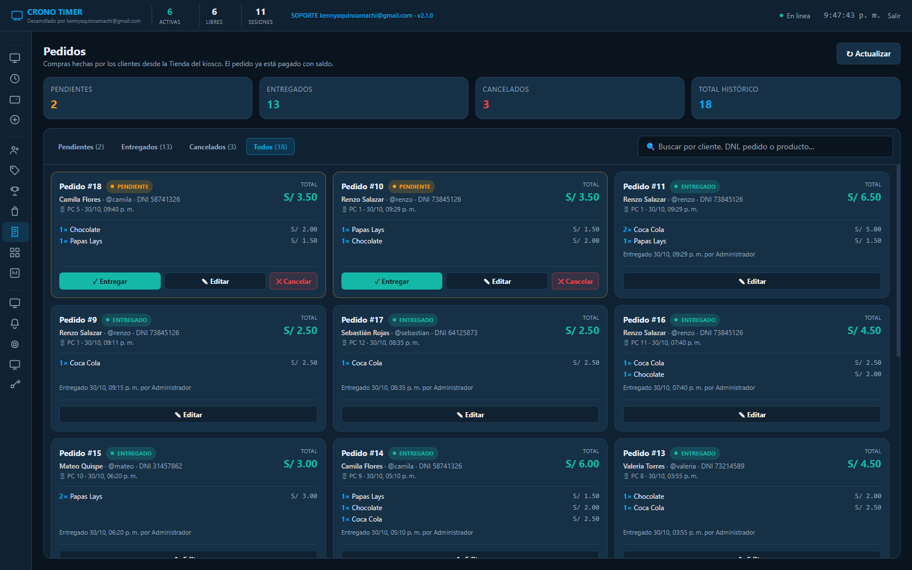
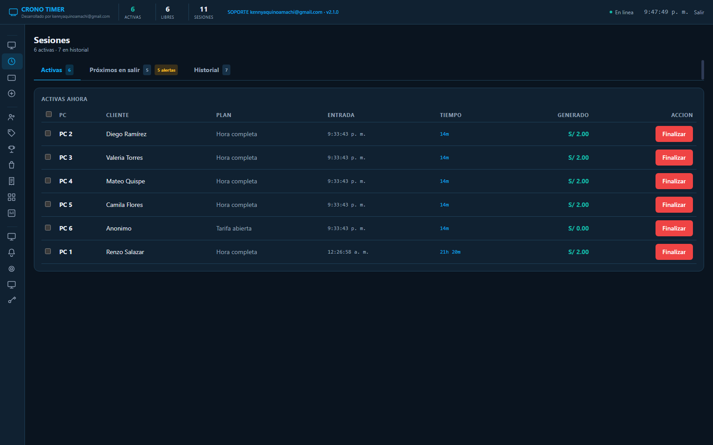
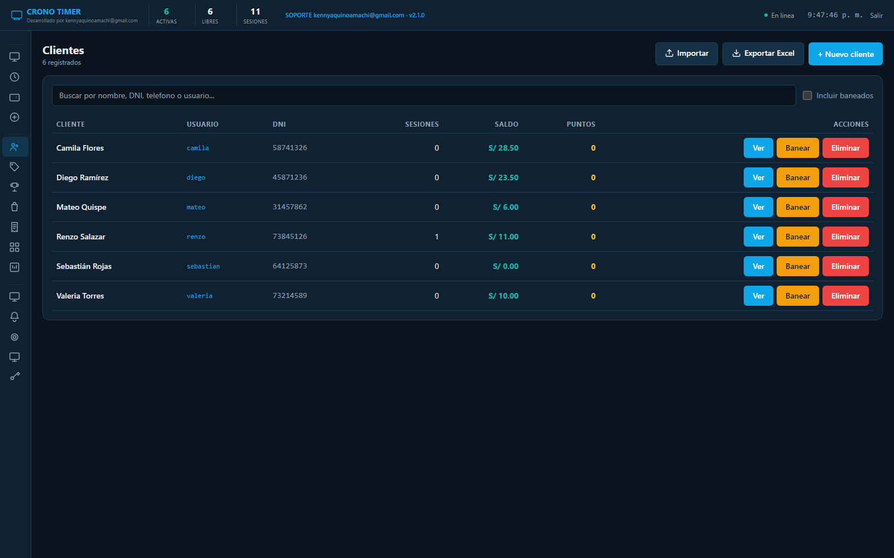
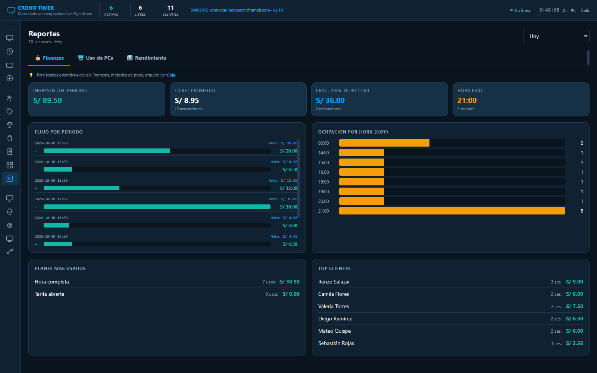

Mapa de estaciones
Vista grid, mapa o lista de todas las PCs. Estados de libre, activa, reservada, bloqueada y mantenimiento, con el tiempo y el cliente de cada sesión.
EstacionesCronoTimer administra tus PCs, sesiones, caja, clientes y tienda desde un solo panel. Tus clientes compran con saldo desde la misma PC y tú ves todo actualizado al instante, sin depender de internet.
Hecho para operadores de LAN center.
Cobros, stock y sesiones en tiempo real, sin planillas paralelas.


Kiosco en vivoQuince módulos que trabajan sobre la misma base de datos: lo que cobras, lo que vendes y lo que pasa en cada PC se refleja en todos lados al instante.
Vista grid, mapa o lista de todas las PCs. Estados de libre, activa, reservada, bloqueada y mantenimiento, con el tiempo y el cliente de cada sesión.
EstacionesTiempo fijo por bloques, modo abierto pospago, cobro por minuto y bonos de día o noche. Pausas, extensiones, transferencias entre PCs y cierre automático.
Cobro automáticoApertura y cierre de caja, ingresos separados por efectivo, Yape, Plin o tarjeta, movimientos y arqueo. El consumo de saldo no se mezcla con el dinero real.
CajaCuentas con DNI, nombre y teléfono, recargas, historial de consumos y saldo en vivo. El cliente ve su saldo actualizado sin volver a iniciar sesión.
ClientesZonas Normal, VIP, PS5 o las que crees. Cada zona hereda sus planes y promociones horarias, con precios distintos para clientes con cuenta y visitas libres.
TarifasCatálogo con imágenes, categorías, buscador y stock real. El cliente arma su carrito desde la misma PC y paga con saldo; si no le alcanza, el sistema se lo avisa.
TiendaEntrega, cancela o edita un pedido. Agregar o quitar productos ajusta saldo y stock, incluso después de entregado. Cancelar reembolsa el total automáticamente.
Nuevo en 2.1Ingresos por día, semana, mes o periodo personalizado, ocupación por PC, horas pico y comparativas contra el periodo anterior. Exportable a Excel.
ReportesCapturas de pantalla, volumen con techo por PC, bloqueo, apagado remoto y encendido con Wake-on-LAN. Todo desde el panel, sin levantarte del mostrador.
SoportePantalla de bloqueo con tu imagen, título, mensaje, horario de atención y anuncios. El kiosco queda a pantalla completa hasta que se autoriza una sesión.
PantallaAdmin, operador y cliente. Define qué puede hacer cada operador: recargas, caja, tarifas o reportes. Cada acción queda registrada en la auditoría.
SeguridadAcumula puntos por consumo, canjéalos por premios o descuentos y configura el porcentaje de canje. Una razón concreta para que el cliente vuelva.
RetenciónAvisos de stock bajo, tiempo o saldo por agotarse, periféricos desconectados y estado de la licencia. Los problemas aparecen antes de que el cliente los note.
AlertasBackups de la base de datos y restauración desde el panel. Cada cobro, recarga, sesión y ajuste queda auditado con usuario y fecha.
MantenimientoEl cliente descubre al servidor solo en la LAN en 50–200 ms, se registra por MAC y se reconecta si se reinicia. No necesitas internet ni nube para operar.
Red localEl cliente no tiene que llamar al operador para pedir una gaseosa. Compra desde el kiosco con su saldo, el stock baja al confirmar y el pedido aparece en el panel al instante.
Capturas tomadas del sistema en operación: estaciones, pedidos, sesiones, clientes, reportes y la tienda del kiosco.
PCs libres, activas, bloqueadas o en mantenimiento. Cada tarjeta muestra cliente, tiempo y estado de la sesión.

Filtra pendientes, entregados y cancelados. Entrega, cancela o edita el pedido sin salir del módulo.

Tiempo transcurrido, plan, cliente y monto acumulado. Pausa, extiende o corta desde la misma fila.

Busca por nombre, usuario o DNI, recarga saldo y revisa el historial de cada cliente.

Compara periodos, detecta los días fuertes y entiende qué PCs y horarios rinden más.
Productos con stock real, carrito y pago con saldo. Si no alcanza, el aviso es inmediato.
Una PC hace de servidor y las demás corren el cliente. Todo se conecta solo dentro de tu red local.
Ejecuta el instalador en la PC del mostrador. Ahí viven la base de datos, el panel y la caja.
Instala NetControl Client en cada PC de uso público. Se registra sola y arranca bloqueada.
Crea tus zonas, planes, bonos, productos y usuarios. Todo desde el panel, sin tocar archivos.
Inicia sesiones, cobra en caja, recarga saldos y entrega pedidos. Los reportes se arman solos.
Estamos grabando un tutorial completo con la instalación, la configuración de tarifas y el primer día de operación. La página ya está preparada para reproducirlo aquí mismo.
Sin comisiones por venta ni cobros por sesión. Elige la modalidad, indica cuántas PCs tienes y te pasamos el precio exacto por WhatsApp.
Para empezar o renovar cada año. Todo el sistema habilitado desde el primer día.
Renovación opcional cada 12 meses.
Calcular mi precioPara locales consolidados que no quieren volver a pagar licencia cada año.
Sin renovaciones obligatorias.
Calcular mi precioVarias sucursales, más de 100 PCs o necesidades de instalación y capacitación.
Condiciones por volumen.
Hablar con un asesorMueve el control según la cantidad de PCs de tu local. Te respondemos con el precio exacto.
La cotización final se ajusta a la cantidad de PCs, soporte e instalación. Prueba gratis con hasta 10 PCs activas, sin tarjeta.
Descarga el servidor y el cliente para Windows 10 u 11 de 64 bits. La prueba funciona con hasta 10 PCs activas y no pide tarjeta.
La app que corre en la PC del mostrador. Incluye panel, base de datos, caja, reportes y servidor WebSocket para las PCs.
Descargar instalador del servidor ZIP portable del servidorD7B25614B861DCD06DFB0A29063E1298EE33BC74343C53FE5F89A0CE851D8708
El kiosco que se instala en las PCs de tus clientes. Arranca bloqueado, descubre al servidor y habilita sesiones y tienda.
Descargar instalador del cliente ZIP portable del clienteCD45E834277CFEC31BB2FC0D7361005EA132E178EA1EEF6D02BC6A5B15EBB8AB
En la PC del mostrador. Anota la IP local que muestra el panel.
En cada PC de uso público. Se registran solas en la red.
Opera en modo trial con 10 PCs o importa tu licencia.
Si te queda una duda que no está acá, escríbenos por WhatsApp y te respondemos concreto.
Preguntar por WhatsAppNo. El servidor y los clientes trabajan dentro de tu red local. Internet solo se usa para descargar actualizaciones, pedir soporte o enviar una cotización. Si se cae el internet, el local sigue operando.
Sin licencia, el modo de prueba permite hasta 10 PCs con sesiones activas al mismo tiempo. Con una licencia, el límite es la cantidad de PCs que contrates. El servidor no consume una licencia adicional.
Es por PC de uso público. Puedes mover la licencia a otra PC con una reactivación; si cambias una sola pieza del hardware, la licencia sigue funcionando. Para varias sedes, se cotiza aparte.
El sistema no se bloquea: pasa a modo básico con hasta 10 PCs activas. Cuando renuevas, recuperas automáticamente la cantidad de PCs de tu licencia original.
En una base SQLite dentro de la PC del servidor. No se suben a la nube. Puedes hacer backups y restaurarlos desde el propio panel, y cada movimiento queda registrado en la auditoría.
Sí, desde la versión 2.1. Puedes agregar o quitar productos de un pedido pendiente o entregado: el sistema cobra o devuelve la diferencia al saldo y ajusta el stock. Los pedidos cancelados no se editan.
Instalas la versión nueva sobre la anterior y la base de datos se conserva. Recomendamos hacer un backup antes de cada actualización. Las actualizaciones de la versión 2.x están incluidas en tu licencia.
Sí. Descarga los instaladores y opera en modo trial con hasta 10 PCs. No pedimos tarjeta ni datos de pago para probar. Cuando estés listo, coordinamos la licencia por WhatsApp.
Sí, como servicio opcional. Podemos dejar el servidor y los clientes configurados, cargar tus tarifas y productos, y capacitar al personal por videollamada o en persona según la ciudad.
Yape, Plin, transferencia bancaria y coordinación directa por WhatsApp. Para empresas o varias sedes emitimos la cotización con los datos de facturación.
Descarga CronoTimer, pruébalo con hasta 10 PCs y lleva el control de sesiones, caja, clientes, stock y pedidos sin planillas paralelas.
Windows 10/11 · Instaladores v2.1.0 · Prueba con 10 PCs · Datos 100% locales
Estamos preparando el video completo de instalación y operación. Si quieres que te avisemos cuando esté publicado, escríbenos por WhatsApp.
Avisarme por WhatsApp